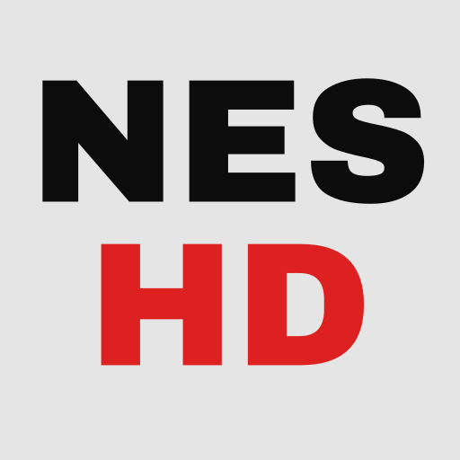

NES HD
NES emulator for Android, powered by Mesen
Want to help test NES HD on your Android device?
NES HD is a mobile-friendly NES emulator for Android powered by the Mesen emulation core. Browse your game library, play fullscreen, and use high-resolution texture packs for a refreshed visual experience.
No games, BIOS files, or commercial artwork are included. You must provide your own legally obtained game files and, for Famicom Disk System games, a compatible FDS BIOS.
Key Features
- NES, Famicom Disk System (FDS), UNIF, NSF, and NSFe file support
- High-resolution texture pack support
- ROM library scanning with list and cover-grid views
- Downloadable cover art for North American, Japanese, and FDS games
- On-screen controls plus physical controller and keyboard input
- Multiple video filters and aspect ratios
- Save states with preview images and battery-backed saves
- Built-in Cheat Manager with an offline cheat database
- Light and dark themes
Device Requirements
- Android 8.0 or newer (API 26+)
- 64-bit ARM (arm64-v8a) or x86-64 (x86_64) device
- OpenGL ES 3.0-capable GPU
- Your own legally obtained game files
- A compatible FDS BIOS for Famicom Disk System games
Getting Started
- Tap the add button to open one game or scan a ROM folder.
- Select a game from the library to start playing.
- Open the settings drawer to choose a video filter, aspect ratio, or FDS BIOS.
- Use the in-game menu to save or load a state and manage FDS disks when applicable.
Cheat Manager
Press and hold a supported game in the library, choose Cheat Manager, and enable or disable individual cheats. Selections are stored separately for each game and applied the next time it starts. Modified ROMs and some regional or revision variants may not match the included offline database.
License & Credits
NES HD includes code derived from Mesen, originally copyright © 2014–2025 Sour, and is distributed under the GNU General Public License v3.0. It is provided without warranty, as described by the license.